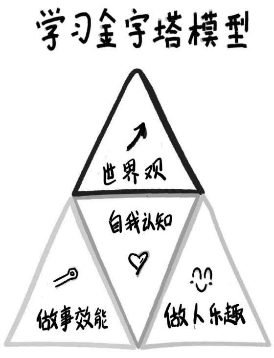

安德鲁·亨特在《程序员修炼之道》一书中就总结了对知识的投资组合策略。他说，管理学习要像管理金融投资组合一样。我们一生中的学习时间是有限的，所以既要定期投资，让学习成为一种习惯，也要明智地选择投资对象，即学习方向。
但是，面对纷繁复杂的信息世界，对于大部分被应试教育“喂养”出来的缺乏选择信息能力的人来说，他们面临的最大学习难题便是不能清晰地判断自己真正的学习需求。在“不知道自己该学习什么”的情况下，大部分人都会产生知识焦虑，从而陷入“贪多求全，什么都想学”的状态。
前段时间，我在北京见了一个很久没见过面的大学同学，毕业后他进了国企，落户北京。我一直认为他的小日子应该过得不错，安稳而从容。但在我们见面的时候，他表达出另外一种焦虑——“知识焦虑”。他说，前段时间他参加了一次高中同学会，发现以往和自己站在同一起跑线的老同学，现在不仅个个都比他收入高、事业发展得更好，就连生活习惯、处事态度、身材管理都比他做得好。他为此深受刺激，回来之后立志要提高和改变自己，于是开始上网查找适合自己的知识付费课程。按理说，想学习是件好事，但是在看完几个主流的知识付费平台之后，他却更加焦虑了，因为这些平台上的付费课程实在是太多了，有讲认知升级、科学通识的，还有讲理财投资、自我管理、两性关系的，甚至连怎么跑步、怎么休息都有人讲……面对海量的选择，他一下子乱了阵脚，看起来每个课程都值得学，但是自己每天忙完工作后，除了要应付家务和陪伴孩子，只有那么一两个小时的空余时间，他实在不知道应该从哪里开始，于是干脆把感兴趣的课程都购买了一份。但一段时间后他发现，这些课程和他以往买的书一样都被束之高阁。
心理学上有一个概念，叫作“同伴压力”，意思是我们只要处在某一个群体中，就无法避免受到其他同伴的影响，这种影响会迫使我们努力和优秀的同伴保持一致或者更加出类拔萃，否则就会陷入一种焦虑的境地，怀疑自己不够成功。
我同学的这种知识焦虑症，就是受到了同伴压力的影响。在老同学的对比之下，他非常迫切地想要迅速提升自己，以至于病急乱投医，忘记了从自己真实的需求出发，对自己的学习方向做一个规划。
信息技术的快速迭代，使得人类社会已经从信息匮乏的时代进入信息过剩的时代。每天，我们都会面对巨大的信息洪流而不知所措。在有限的时间里如何选择想要学习的知识，已成为全社会都要面对的问题。那么，我们有没有什么好的工具或者方法来解决这种“什么都想学却不知道学什么”的问题呢？
当然，同样的问题我自己也需要面对，幸运的是，在过往几十年的学习历程中，我发现了一个“学习金字塔模型”，它能帮助我在有限的学习时间内聚焦自己的学习方向，时刻保持快速的个人成长。这个学习模型让我在从业20年的时间里，从一个普通的销售专员做到了上市公司总裁，从传统行业转型到信息互联网行业，而且还成了畅销书作者。事业之外，我还坚持兼顾自己的爱好，在书法和国画上也算小有成就。今年，我决心利用更多空余时间踏入知识付费的领域。这次，我同样借助这个学习金字塔模型快速完成了知识迭代，在短短不到一年的时间里，就打磨出三门在线课程，同步出版了两本相关图书。我从一个知识付费的门外汉变成了半个专家，可见学习金字塔模型的威力非常强大。
现在，我将把这个神奇的学习金字塔模型分享给你。
学习金字塔模型由4个模块构成，分别代表4个学习方向：做事效能、做人乐趣、自我认知、世界观。

所谓大道至简，学习金字塔模型也是如此。虽然看起来简单，但这个模型的组成及布局却蕴含着深刻的哲理。我们可以想象金字塔的中间站着一个人，他脚下踩着的是人生的两大根基：一个是做事的效能，一个是做人的乐趣——高效能、慢生活，一紧一松，平衡着我们的人生。金字塔的中间是一个人的自我认知，这是我们每个人终其一生感到最难也是最核心的命题。金字塔的顶端是一个人抬头认识世界的世界观，是我们时刻需要做好的视野训练。
为了帮助大家理解这4个方向，接下来我将一一详细阐述。
首先，如何理解做事的效能呢？我们每个人每天都需要完成大量具体的事务，比如工作上要开发程序、销售产品、跟客户谈判、汇报演讲、写方案、统计报表……生活上要做饭、操持家务、辅导孩子、维护夫妻关系……这些都需要我们掌握相应的技能。技能掌握得越熟练，事情就会做得越好。这些让我们能够提升自己做事效率的技能性学习，就是做事效能。
其次，如何理解做人的乐趣呢？这个因人而异，有人喜欢在工作之余写几幅大字、涂涂鸦，有人喜欢通过运动来放松自己，还有人喜欢搞一些新奇的收藏，或者在业余时间拨弄一下熟悉的乐器……一个人真正的乐趣，需要满足两个要求：一是能够陪伴我们一生，二是能随时为我们带来内在的幸福感。能满足这两个要求的兴趣就像是一个专属于自己的秘密花园，当我们忙完工作和各种杂事之后，就可以随时切换到这个花园里享受生命的乐趣，恢复能量，获得满足。
第三，如何理解加强自我认知呢？所谓自我认知，指的是一个人通过对心理学、哲学的学习，更好地认识自己、治愈自己。很多时候，一个人对自身的认识不仅决定了他对整个世界的认知，也影响着他和他人之间构建的关系。我发现，生活中有很多人，当他们的人生走到一定阶段后，之所以出现瓶颈，不能再往上提高，其中一个很重要的原因就是他在自我认知上存在比较大的缺陷，而自我认知方面的学习可以帮助他们突破这个瓶颈。
最后，如何理解升级个人的世界观呢？很多人可能觉得“世界观”这个词语过于宽泛和宏观，认为世界观对自己的工作和生活不会产生什么实质性的影响。的确，世界观的提升可能不会迅速地映射到我们的人生中，我们也无法立刻看到它的效果，但世界观却会影响我们对未来的判断，而我们对未来的判断又会直接影响到自己当下在职业或生活上做出的决定和选择，进而影响我们在家庭角色中对自我的定位，甚至影响我们从哪个方向去教育自己的孩子。到最后，我们会发现，人和人最终的差距，正是在于他们对这个世界的理解——我们怎样观察和理解这个世界，就会怎样安排自己的人生。从这个角度看，我们很有必要去升级自己看待世界的方式，积极了解自然科学、人类史、科技的发展、社会的转型、文化的融合等等这些看起来貌似没有什么用的东西。
在理解了为何要学习金字塔模型之后，接下来我们还需要确定每个方向具体的学习内容，毕竟每个学习方向包含的技能或知识内容相当丰富。
首先，我们要确定效能性学习的具体内容。前面我们曾经讨论过，在工作和生活中需要我们提高技巧的事情很多（大到客户谈判，小到开车做饭），但每个人的精力都是有限的，我们应该先从哪些事开始着手呢？
面对这种情况，我的经验是从当下工作和生活的应用场景出发，撇开那些暂时无关紧要的技能，集中精力找出当下用得最多、最能为自己产生直接价值的技能去学习。
刚入职场的时候，我是一个最基层的销售专员，当时我进行的所有学习，首先考量的一点就是：我要学的内容能否提升我的销售业绩？能否帮助我在未来晋升销售经理？本着“学以致用”这个核心目标，我每天都把工作和学习的场景合二为一，在工作中自然而然地重复和深化所学内容。这样做还有一个好处，就是学到技能之后我便能马上拿来验证，如果成功了，那么随之而来的成就感会让我动力十足，更加坚定地投入精力去学习。
这个方法不仅适用于刚刚参加工作的基层人员，对职场精英也同样有效。以我个人为例，在我进入公司管理层后，工作强度和工作内容都发生了很大变化，疲于奔波的同时，我常常感觉自己时间严重不够用，恨不得一天能拿出48个小时来工作。这个时候，我又拿出学习金字塔模型梳理自己，发现问题出在欠缺时间管理技能上。找到问题后，我精心挑选了几本有关时间管理的书，一边学习相关的知识技巧，一边在工作中努力实践，这样很快就把自己的时间安排得井井有条。同样的道理，当我开始着手负责公司大型合作的谈判工作之后，我又集中精力去学习和练习谈判技巧，直到把学到的谈判知识转化为自己的谈判能力。
总之，确定效能性学习内容的两个核心关键点就是“用什么、学什么”，以及“学什么、练什么”。只要我们掌握好这两点，就能不断提升自己的做事技能，最终成为一个能力优秀的人。
其次，我们要确定培养什么样的内在兴趣。俗话说，一张一弛，文武之道。当我们学会了把事情做得越来越快、越来越好时，也要学习如何适时地放松自己，享受做人的真正乐趣。你可能会问：“这还要学习吗？吃喝玩乐谁不会啊？！”在这里我要提醒你的是：你一定要分清楚什么是“真兴趣”，什么是“假兴趣”。比如躺在沙发上玩手机、追剧也是放松，但这些行为真的能带给我们长久的快乐吗？我想很多人都深有体会，这种低级的放松方式只会让我们在消磨时间后更加颓废。
我们还是要按照学习金字塔模型中第二个方向，培养一个或者几个真正能为自己带来幸福感的兴趣，切忌一时头脑发热，花费不少时间和精力培养出一堆“假兴趣”。那么，什么是假兴趣呢？除了上面提到的刷抖音、追剧，还有这类情况：你偶然看到别人弹钢琴很酷很高雅，自己也立刻想学钢琴；你看到别人家的孩子跳舞跳得特别棒，于是也想让自己的孩子马上去学跳舞……这些都属于一时兴起的“假兴趣”。
和假兴趣相反，真兴趣总能让我们废寝忘食、乐在其中，即使没有别人的认可，我们的内心也能获得真正的满足。而且，每个人的性格和天赋都不同，所以在培养兴趣这件事上，我们千万不要跟风，而是要找到那些能够为自己带来长久快乐的“种子”，然后精心灌溉，培养出属于自己的“兴趣之花”。
我个人非常喜欢学习国画和书法，甚至认为自己每天最幸福的时刻，不是站在演讲台上侃侃而谈、接受观众的掌声，也不是历尽千辛万苦终于拿下了一个项目，而是忙完一天后，静心写字作画的那一小段时间。在那一刻，我总能感觉身心归一，内心无比平和。因为国画和书法能带给我真正的快乐，所以无论工作多忙，即使出差在外，我也会随身携带书画工具，抓住一切机会练练字、画幅画，通过这种方式洗去一身的压力和疲惫。
第三，我们要确定如何提升自我认知，弥补自身的不足之处。这个不足之处可以是情绪管理、人际关系、两性关系、意志力、专注力等各个方面的缺陷。
怎样觉察自己有哪些不足之处呢？职场心理学家塔莎·尤里克在她的著作《自知力》（Insight）里为我们提供了一种很实用的方法，那就是向外探索，了解别人对我们的看法。你可以请一个关系不是很近但极具洞察力的人对你做出评价，因为他给出的评价往往比那些和你亲近的人更客观。
这个方法是有一定科学依据的。研究表明，如果你只是从视频上观察一个人大概5分钟时间，你们虽然没有见面，但你给他的评价，在准确度上几乎和与他经常见面的亲友的看法相似。而且，亲友通常不会对我们知无不言，特别是让他们指出我们缺点的时候。虽然让一个和自己不太亲近的陌生人对自己“指手画脚”有点儿难为情，可我们一旦真的从这些人的评价中发现了自己的不足之处，就可以相应地制订出一份更有价值的自我提升计划。所以，这个方法还是非常值得一试的。
在向别人征询评价的时候，可以尽量把我们的需求具体化。如果你希望自己在别人眼里是个幽默诙谐、魅力四射的人，那么不妨找个昨晚和你一起参加派对的人，问问他对你的印象是否和你的期待相符。你做了哪些事情，可以帮助自己树立幽默诙谐的形象？又做了哪些不利于树立这种形象的事？慢慢从自己最希望改进的地方开始着手。
第四，我们要确定从哪些知识的学习中升级世界观，从而提高自己对世界的认识。这么说可能有点儿抽象，我们可以采用化整为零的办法，分成两层去学习。
第一层，要关注那些自己未知的、能够对原有认知进行颠覆的知识。这一层其实不难，如今信息开放程度很大，国内外颠覆性的经典著作随处可见。
比如尤瓦尔·赫拉利所著的《人类简史》和《未来简史》这两本畅销书——《人类简史》颠覆了我们对人类历史的认知，《未来简史》点燃了人类对未来的想象。如果你能潜心读完，就一定能打开自己的眼界。还有凯文·凯利的代表作《失控》，书中对社会进化、互联网发展等领域做出了很多精彩的“先知预言”。这些通过当代资深的专家和研究者观察和思考出来的颠覆前人三观的知识，都非常值得我们学习。
第二层，要学习杂乱信息里的真实逻辑，也就是那些具有普遍指导意义的规律或原理。比如，你有没有想过自己所在的行业是怎么产生的？现在影响这个行业发展的技术因素有哪些？掌握哪些规律可以让我们从一个夕阳行业转型到新兴行业去？经常做些这样的思维体操，你就会渐渐发现，自己的思想格局也会随之变高变大。
最后，我想提醒一点：在根据学习金字塔模型去确定具体的学习内容时，千万不要贪多求全、囫囵吞枣，最多同时进行的学习内容不要超过4个。不信的话，你可以计算一下，自己一个月可自由支配的时间有多少？
每个人的一天都是由3个8小时组成：睡眠8小时、工作8小时、可以自由支配的8小时。减去一些必要的时间支出，比如上下班通勤2小时、吃饭、聚会、追剧等，每天能有2~3个小时用来学习就非常不错了！
假设按每天2个小时计算，一个人每个月满打满算也只有60个小时的学习时间。再看看你给自己定下的学习内容，加起来需要多少个小时呢？只是每天阅读30分钟，就花掉了1/4的时间。所以，理想很丰满，现实却很骨感！况且百艺通不如一艺精，样样都想学，最终只能每样都学个皮毛。
时代正在犒劳那些保持终身学习的人，而“会学习”的第一要务便是知道学什么，做个明白人。面对浩如烟海的信息海洋和此起彼伏的知识焦虑，我们首先要学会的便是根据自身的需求，制定合理的学习目标，切忌踏入贪多求全的误区。